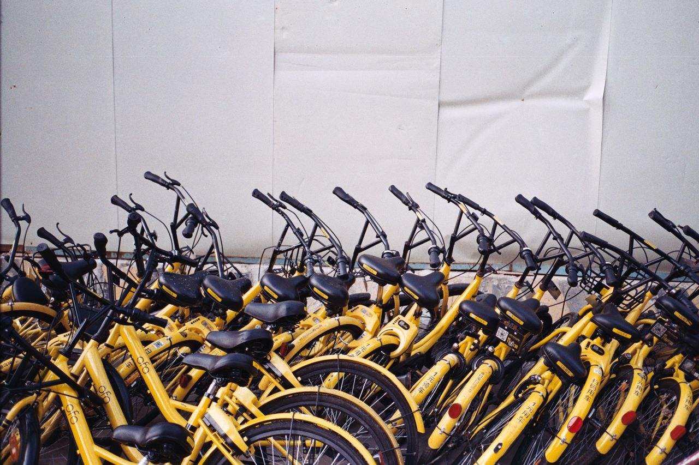
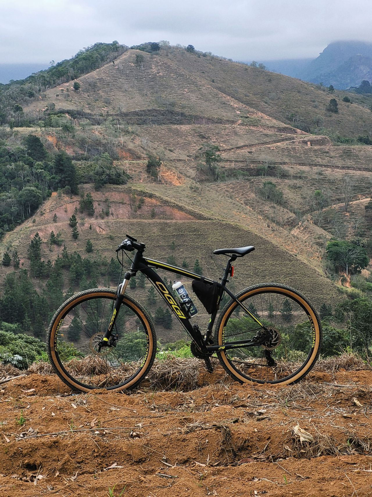
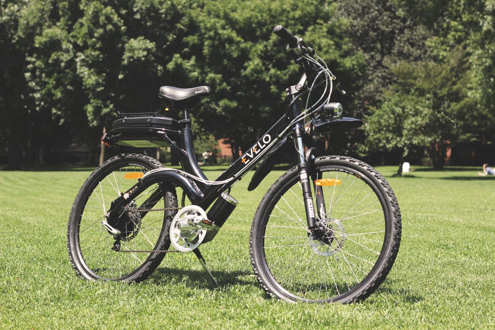

Bicicletas de ciudad
Muévete a tu propio ritmo y explora cada rincón de la ciudad con
total libertad. Todas las unidades cuentan con diseño liviano,
cambios fluidos y mantenimiento al día. Una excelente opción si
buscas una alternativa práctica, ecológica y ligera para tus
desplazamientos diarios.
Reserva ahora una bicicleta de ciudad

Bicicletas de montaña
Domina cualquier terreno irregular y desafía con seguridad senderos,
trochas y caminos destapados. Todas las unidades cuentan con
suspensión de alto rendimiento, llantas de gran agarre y
mantenimiento al día. Una excelente opción si buscas una aventura
llena de adrenalina y máxima estabilidad en la naturaleza.
Reserva ahora
una bicicleta de montaña

Bicicletas eléctricas
Nuevo
Supera cualquier pendiente sin esfuerzo o aventúrate por senderos
naturales. Todas las unidades cuentan con
batería de larga duración y mantenimiento al día.
Una excelente opción si prefieres un trayecto
sin fatiga excesiva.
Reserva ahora una bicicleta eléctrica
